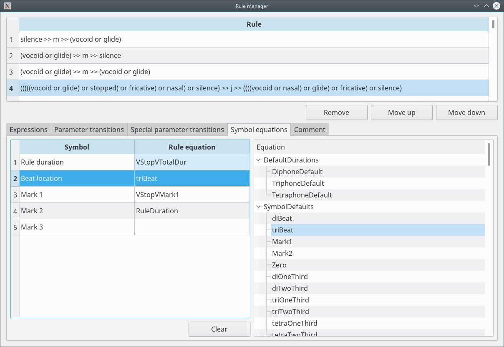

Rule manager - symbol equations

The symbol equations define the durations for the Rule.
Operations:
- Select an Equation for a symbol:
Select the symbol and select the Equation on the Equations tree. - Clear a symbol:
Select the symbol and click on "Clear". Mark 3 should only used by tetraphone Rules, and Mark 2 should only used by triphone and tetraphone Rules.